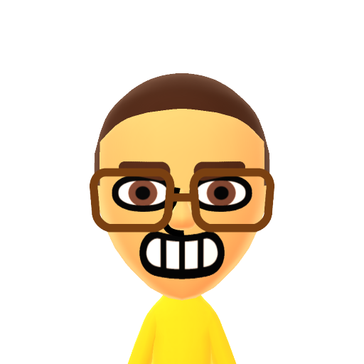

ENGL 1007 Studio: Portfolio Project 1
ENGL 1007 Studio: Portfolio Project 2
I made these back in high school for a mock election we had. Back in 2021, speech ai was quite novel and uncommon. Instead of using modern AI, I used a text to speech engine. I wrote all the dialog myself. They were pretty funny and people enjoyed them. To share them I created stickers utilizing QR codes, which weren’t used as often either (until mine got popular, of course).
this media is currently lost. Once recovered it will be hosted here
In high school I made this presentation as a satirical piece for a project where we were allowed to teach our own lesson. It was a theory stating that tarzan, beauty and the beast, and curious george were all a part of the same universe. As my performance becomes more and more erratic I explain their connection to all fictional universes and to our own. This was in no way meant to be taken seriously, and was mainly for being able to perform within the confines of a slideshow presentation.
I made this for my Anthropology class in college. It's a comedic parody of the end sequences in the popular children's show “Dinosaur Train”, where Dr. Scott the Paleontologist goes over some details about the preceding episode’s creature with a group of young children. With the help of my roommate, a greenscreen I couldn't get working, and socks to substitute for children, I put on an educational and very entertaining performance. I'm really proud of this as I had to script and film it instead of my usual freestyle performance or unperformed written skits.
My curation tells the story of my progress in media creation. I went from simple computer generated sound and imagery to projects where I step in front of the camera and do all the talking myself with some original flair. These are all projects that I put a lot of passion and spirit into. I made sure that they were informative when they had to be, and funny any chance they could. While text to speech had a good amount of funny points on its own, being able to add my own voice, tone, and movement to the script made the whole process a lot more fun and expressive, and it did the same to the final product. I think a big thing that changed was going from simple dumb funnies to content that makes sure to teach everything it has to, while also being able to tactfully and potently deliver the entertainment. One important thing in my writing is making sure my audience can enjoy what I make them. I could have the healthiest food in the world, but i need to make sure i give it flavor, texture, and color, or else no one will try it!
ENGL 1007 Studio: Portfolio Project 3
👋 hello there! my name is nick! I am a rising sophomore studying Computer Science at the University of Connecticut.
🗣 My mission is to create joy, to inspire curiosity, and to lead others to do the same
💪 My strengths are in creativity, curiosity, and being able to apply things ive learned in unconventional ways.
🤹♀️ I enjoy writing, particularly in writing characters and worldbuilding. I've also been sketching for a long time. I can put whats on my mind onto paper (often better than i can put it into words). This works out great for my writing, as I often couple these skills together. I also enjoy coding. I know multiple coding languages, and learning new ones is never too diffiult.
🚶♂️ Im working to improve my skills in concentration, perserverance, and leadership. these traits are important to me and I'm always striving to improve my strengths and lessen my weaknesses. I'm aslo trying to improve my skills in animation, game engines, and especially teaching.